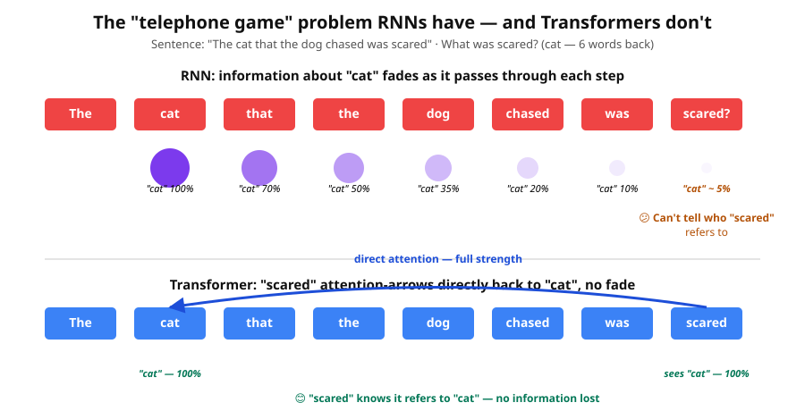
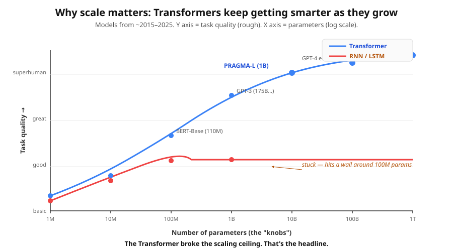

Three superpowers: speed, memory, scale. The reason ChatGPT exists.
Before Transformers, the dominant tool for sequences was the Recurrent Neural Network (RNN). An RNN reads sequences one word at a time, updating a single "memory note" at every step.
Index card analogy: imagine reading a book using only one index card. You can only write what fits on the card. For every new word, you erase the card and rewrite it to include the new info. By the end of a long chapter, almost none of the early details survive.
Click "Run" below. The same sentence will be processed by an RNN (top) and a Transformer (bottom). Watch the time difference.
An RNN must finish word 1 before it can start word 2. A 100-word sentence = 100 sequential steps you cannot parallelise.
Transformer fix: attention lets the model process all 100 words simultaneously — one big matrix multiplication. On GPUs, that's literally ~100× faster.
The "single index card" problem. Information about a word fades as it passes through more update steps.

Transformer fix: with attention, when the word "scared" is being processed, it can put 90% of its attention directly on "cat" — across 6 words, with no information loss.
Two reasons:
Transformer fix: attention is parallel and gradients flow cleanly. Transformers just keep getting better as you make them bigger.

When you can train on enormous data (parallel = fast), capture long-range patterns (direct attention = no fade), and scale to billions of parameters (gradients flow cleanly), a single model can absorb so much general knowledge that you reuse it for many tasks with just a small bit of fine-tuning on top.
That's the foundation-model idea. PRAGMA does this for Revolut — pre-train once on 24 billion banking events, adapt to credit scoring, fraud detection, lifetime value, etc.